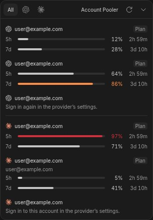
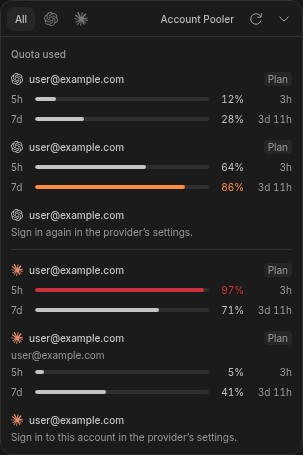

#8249 · Sidebar percentages omit a visible consumption label
Verdict: REPRODUCED · Root-cause confidence: high · Reproduction label: confirmed-repro
1. TL;DR
The provider-usage sidebar displays a short window name, a percentage, and a reset countdown, but does not visibly identify the percentage as consumed quota. Its accessible button name already says “used”; that string is not painted in the collapsed row. This is a presentation omission, not a reversed calculation or a provider-data failure. It reproduces with two providers and two windows each, and the repository story shows the same result. One shared “Quota used” label above the displayed accounts fixes the omission.
2. Claims vs findings
| Claim assessed | Finding | Evidence |
|---|---|---|
| The sidebar does not visibly identify percentage direction. | Verified | The unchanged component fails the visible-label regression in both checkouts. The baseline screenshot shows bare percentages. |
| The percentage represents quota consumed. | Verified | The renderer reads window.usedPercent for the number and bar, and formats its accessible name with “% used”. |
| Accessible labels and reset information already exist. | Verified | Baseline button names contain “used” and reset text; countdowns are visible. Tests and browser expansion retain both after the fix. |
| Settings identifies the number as used. | Verified in source | The settings formatter appends “% used”. No live settings session was needed. |
| A user actually chose an exhausted provider because of this ambiguity. | Unverified | Misinterpretation is plausible; no real user-selection incident or downstream account was exercised. |
3. Environment
- Public target
get-bb/bb; both checkouts used the exact trusted main commit above. - Linux x86_64; Node v22.19.0; pnpm 9.15.0; Vitest 4.1.12; headless Chromium 156.0.8078.108.
- Package
bb-plugin-bb--provider-usage. Deterministic Codex and Claude Code fixtures only; no provider processes, accounts, or credentials. - Visual check: repository Ladle disclosure story, port 43189; refresh disabled by that story. No BB server, host daemon, user store, or product database was started or accessed.
- The second clean detached checkout used fresh filesystem state. DOM tests require neither network ports nor a data directory.
4. Minimal reproduction
- Check out trusted main and prepare the existing SDK build:
git checkout b0ddaad731565d7e4de68d824120d802fc78f7d5 pnpm install --frozen-lockfile --prefer-offline pnpm exec turbo run build --filter=@get-bb/plugin-sdk
- Save the complete test below as
plugins/provider-usage/quota-direction.test.tsx. It renders the real exported sidebar content through the existing Plugin SDK test runtime, not a replica. - Run the regression:
pnpm exec turbo run test --filter=bb-plugin-bb--provider-usage -- quota-direction.test.tsx
Expected: visible percentage meaning is identified for All, Codex, and Claude Code; each provider retains two windows, accessible names, countdowns, and reset expansion.
Actual on unchanged trusted main (verbatim diagnostic):
TestingLibraryElementError: Unable to find an element with the text: Quota used. This could be because the text is broken up by multiple elements. In this case, you can provide a function for your text matcher to make your matcher more flexible.
- For the visual reproduction, start the existing story browser:
pnpm exec turbo run storybook --filter=@bb/app -- --port 43189
Open
http://127.0.0.1:43189/?story=plugins--provider-usage--disclosureand inspect the mixed-pool card: two providers, four measured accounts, eight window rows.
Complete reproducible regression test
// @vitest-environment jsdom
import { cleanup, fireEvent } from "@testing-library/react";
import { afterEach, expect, it } from "vitest";
import { renderSlot } from "@get-bb/plugin-sdk/testing/app";
import type { UsageProvider } from "./usage-schema.js";
afterEach(cleanup);
it("identifies visible percentages as quota used across provider tabs and windows", async () => {
const { ProviderUsageStatusContent } = await import("./app.js");
const providers: UsageProvider[] = ["Codex", "Claude Code"].map(
(displayName) => ({
id: displayName,
providerId: displayName,
displayName,
accountLabel: null,
logoUrl: null,
icon: null,
strings: { iconTint: null },
signInHint: "Sign in.",
expiredHint: "Sign in again.",
usage: {
status: "ok",
accountEmail: null,
planLabel: null,
windows: [
{
label: "Five-hour limit",
usedPercent: 100,
resetsAt: new Date(Date.now() + 3 * 3600_000).toISOString(),
cost: null,
},
{
label: "Weekly limit",
usedPercent: 25,
resetsAt: null,
cost: null,
},
],
},
}),
);
const slot = renderSlot(
{ component: ProviderUsageStatusContent },
{
pluginId: "bb--provider-usage",
dismiss: () => {},
threadMachineId: null,
refreshEnabled: false,
snapshot: {
data: {
machines: [
{
id: "quota-direction-machine",
displayName: "Test machine",
status: "connected",
error: null,
providers,
},
],
},
error: null,
isRefreshing: false,
},
},
);
for (const name of ["All accounts", "Codex", "Claude Code"]) {
fireEvent.click(slot.getByRole("tab", { name }));
const label = slot.getByText("Quota used");
expect(label.closest('[hidden], [aria-hidden="true"]')).toBeNull();
const rowCount = name === "All accounts" ? 2 : 1;
expect(slot.getAllByText("100%")).toHaveLength(rowCount);
expect(slot.getAllByText("25%")).toHaveLength(rowCount);
expect(
slot.getAllByRole("button", {
name: /Five-hour limit: 100% used\. Resets /,
}),
).toHaveLength(rowCount);
const weeklyWindows = slot.getAllByRole("button", {
name: "Weekly limit: 25% used. Reset time not reported",
});
expect(weeklyWindows).toHaveLength(rowCount);
expect(slot.getAllByText("3h")).toHaveLength(rowCount);
fireEvent.click(weeklyWindows[0]!);
expect(
slot.getAllByText("Reset time not reported.").length,
).toBeGreaterThan(0);
}
});


Actual headless-browser captures, cropped to the card and converted from the browser’s JPEG output to PNG. Story identities and plan names were generalized in the DOM before capture; quota rows and behavior were not altered. Countdown differences reflect elapsed time and story remounting.
5. Root cause
UsageWindow constructs an accessible value with an explicit suffix:
Math.round(window.usedPercent) + "% used"
That formatted value is passed to aria-label, but the separately painted percentage does not use it:
<span>{Math.round(window.usedPercent)}%</span>
<span aria-hidden="true">{countdown ?? "—"}</span>
The shared tab panel renders notices and accounts without any visible legend identifying quota direction. Single-provider mode only says “Usage”; multi-provider mode replaces that heading with provider tabs. Consequently the accessible wording is correct while the visible wording is incomplete. Aggregation and quota arithmetic need no change.
6. Proposed fix and verification
Add one “Quota used” text label in the existing tab panel whenever a displayed account has successful usage with at least one window. Do not label empty, authentication-only, or initial-loading states. Keep the row renderer, data, accessible names, monetary presentation, and reset interaction unchanged. All and individual-provider tabs already share this path.
The implemented patch changes two files in one subsystem: nine production additions and 83 regression-test additions, 92 total text lines and no deletions. No dependency, generated file, protocol, schema, migration, or stored-data change.
Verification
- The focused test was added before changing production and failed at the missing visible label on trusted main.
- This same agent repeated the final regression in a second clean detached checkout at the recorded base. It failed at the same missing-label assertion. This is a repeated clean run, not independent-agent verification.
- After the fix, it passes across All, Codex, and Claude Code with two windows per provider, including a 100%-consumed window.
pnpm exec turbo run test lint typecheck --filter=bb-plugin-bb--provider-usagepasses: five test files, 26 tests, plus lint and typecheck.- Browser checks after the fix: label visible with eight window rows in All and four each in Codex and Claude Code. Expanding a window still visibly displays reset text.
git diff --checkpasses; numstat contains only two text files.
The clean checkout used the recorded trusted commit, a frozen dependency install, and only the new regression test copied into the existing test file. Production files remained unchanged. The exact focused invocation there was:
pnpm exec turbo run test --filter=bb-plugin-bb--provider-usage -- app.test.tsx -t 'identifies visible percentages'
Unchanged base, first checkout: 1 failed | 7 skipped (missing Quota used) Unchanged base, clean checkout: 1 failed | 7 skipped (missing Quota used) Fixed component, focused test: 1 passed | 7 skipped Fixed component, plugin suite: 5 files passed; 26 tests passed Lint and typecheck: passed
The initial repository-wide build stopped because the GitHub plugin could not yet resolve built SDK entries. Building the SDK explicitly succeeded; scoped build dependencies and relevant verification then passed. The full repository build was not rerun. No unrelated build or packaging code was changed.
7. Related work and scope
No linked open pull request was found in the issue timeline or open-PR search before implementing the change. No linked branch was checked out. External issue links and downstream screenshots were not fetched or used as evidence.
Trust boundary: issue content was treated solely as untrusted claims. No issue-provided instructions, scripts, commands, or patches were executed. Application code came from trusted origin/main plus the small test and presentation change derived from repository evidence.
8. Appendix
The complete regression is embedded above rather than committing raw tests or logs, following the public reports repository’s artifact policy. Raw output and repeated-checkout evidence remain local. Screenshots were visually inspected for disclosure safety.
Additional checks: repository visibility and final issue Type were read through GitHub metadata; frozen installs ran in both checkouts; origin/main was fetched before branching; root-cause links were checked against that base. Relevant existing tests passed before and after the production change.